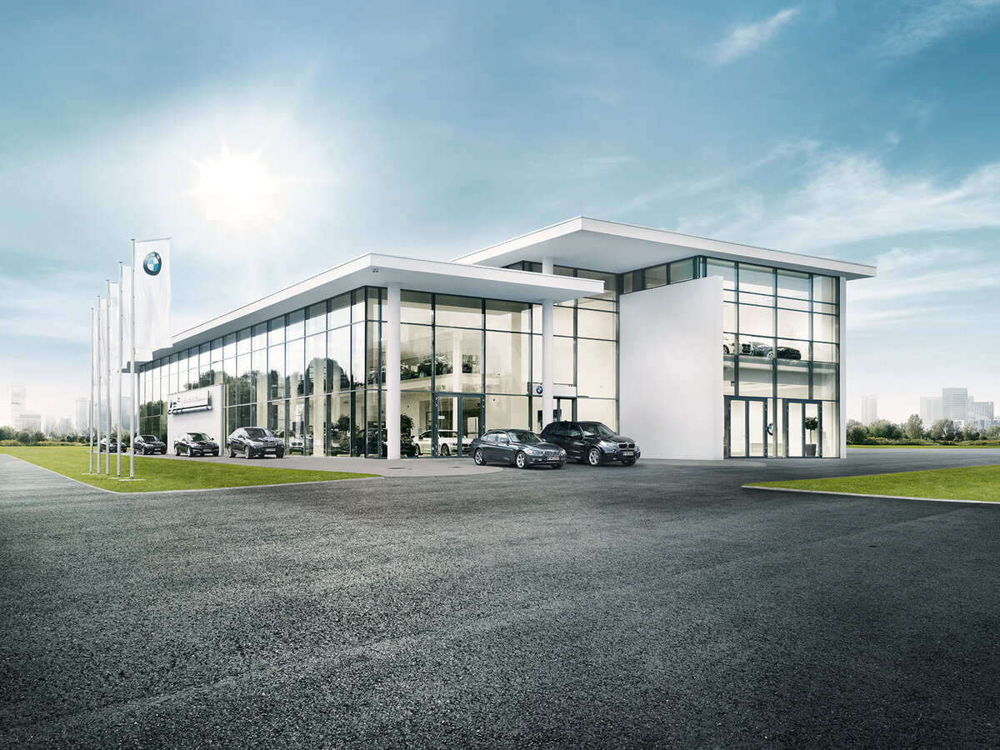

Автоцентр "АвтоМир" — это лидер в сфере обслуживания автомобилей, предоставляющий широкий спектр услуг. Наш автоцентр предлагает продажу новых и подержанных автомобилей, а также качественное обслуживание и ремонт любых марок. Мы гордимся профессионализмом наших мастеров и высоким уровнем обслуживания.
Наши специалисты имеют многолетний опыт работы и используют только современное оборудование для диагностики и ремонта. Мы гарантируем качественный результат и довольных клиентов. Независимо от сложности задачи, наша команда всегда готова предложить наилучшее решение.
